It needs several steps to get the transadmittance matrices 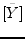 and 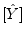 mentioned in equation (7.1). First the MNA matrix of the linear subcircuit (figure 7.1) is created (chapter 3.1) without the voltage sources 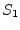...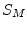 and without the non-linear components. Note that all nodes must appear in the matrix, even those where only non-linear components are connected. Then the transimpedance matrix is derived by exciting one by one the port nodes of the MNA matrix with unity current. After that the transadmittance matrix is calculated by inverting the transimpedance matrix. Finally the matrices and are filled with the corresponding elements of the overall transadmittance matrix.
Note: The MNA matrix of the linear subcircuit has 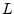 nodes. Every node, that is connected to the non-linear subcircuit or/and is connected to a voltage source, is called "port" in the following text. So, there are 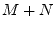 ports. All these ports need to be differential ones, i.e. without ground reference. Otherwise problemes may occur due to singular matrices when calculating or .
Now this should be described in more detail: By use of the MNA matrix
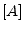, the  -th column of the transimpedance matrix 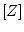 should be
calculated. The voltage source at port
-th column of the transimpedance matrix 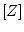 should be
calculated. The voltage source at port  is connected to node
is connected to node  (positive terminal) and to node
(positive terminal) and to node  (negative terminal). This results
in the following equation. (If port
(negative terminal). This results
in the following equation. (If port  is referenced to ground, the
-1 is simply omitted.)
is referenced to ground, the
-1 is simply omitted.)
| 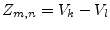 | (7.4) |
The next column of is obtained by changing the right-hand side of equation (7.3) appropriately. As this has to be done 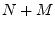 times, it is strongly recommended to use LU decomposition.
As is not square, problems encounter by trying to build its inverse matrix. Therefore, the following procedure is recommended:
One further thing must be mentioned: Because the non-linear components and the sources are missing in the linear MNA matrix, there are often components that are completely disconnected from the rest of the circuit. The resulting MNA matrix cannot be solved. To avoid this problem, shunt each port with a 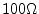 resistor, i.e. place a resistor in parallel to each non-linear component and to each source. The effect of these resistors can be easily removed by subtracting 10mS from the first main diagonal of the transadmittance matrix.
A difficult question is how to find appropriate start values for the harmonic balance simulation. It is recommended to first perform a DC analysis and start the algorithm with this result. In many situation (perhaps always) an even better starting point can be achieved by also using the result of a linear AC simulation. However with a large signal strength and strong non-linearities, convergence may still fail. Then, the following procedure might succeed: Perform HB simulation by applying half of the desired signal levels. If convergence is reached, the result can be used as start values for the simulation with the full signal levels. Otherwise the amplitude of the signals can be further decreased in order to repeat the above-mentioned procedure.
To perform a HB simulation, the multi-dimensional, non-linear function 7.2 has to be solved. One of the best possibilities to do so is the Newton method:
| 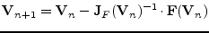 | (7.5) |
To obtain a practical algorithm of this procedure, the DFT is best written as matrix equation. By having a look at equation 15.180 and 15.181, it becomes clear how this works. The harmonic factors 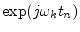 build the matrix 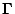:
| DFT: |
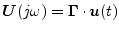 | (7.8) |
| IDFT: |
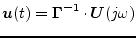 | (7.9) |
| 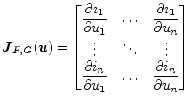 | (7.11) |
The formula 7.10 seems to be quite clear, but it has to be pointed out how this works with FFT algorithm. With 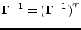 (see equation 15.181) and 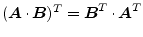, it follows:
| 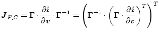 | (7.12) |
So, finally the complete HB Newton iteration step can be written down. Putting 7.2 and 7.7 into 7.6 leads to
| 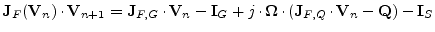 | (7.14) |
| 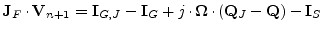 | (7.15) |
Frequency components with very different magnitude appear in harmonic balance simulation. In order to detect when the solver has found an accurate solution, an absolute as well as relative criteria must be used on all nodes and at all frequencies. The analysis is regarded as finished if one of the criteria is satisfied.
The absolute and relative criteria write as follows:
| 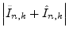 | 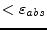 | 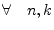 | (7.16) |
| 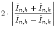 | 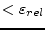 | (7.17) |